Recent CFD work I have been working on
2026-04-02 22:46:21
Thought I would share sneak peeks into my recent CFD work, the two main projects being formula student aerodynamics and adaptive mesh refinement techniques for external aerodynamics across different Mach (and velocity) regimes.
These different strategies are:
- 1) adjoint (output) based adaptive mesh refinement
- 2) feature based adaptive mesh refinement
- 3) regular adaptive mesh refinement
As the project is still in progress, the results are to come in a separate future blog
The rocket
SLS at at mach 1.5, using spallart allmaras turbulence model, with a 2nd order finite volume method and Roe's flux differencing. The adjoint-based AMR is based on the drag coefficient as the output of interest, while the feature-based AMR is based on density gradients.
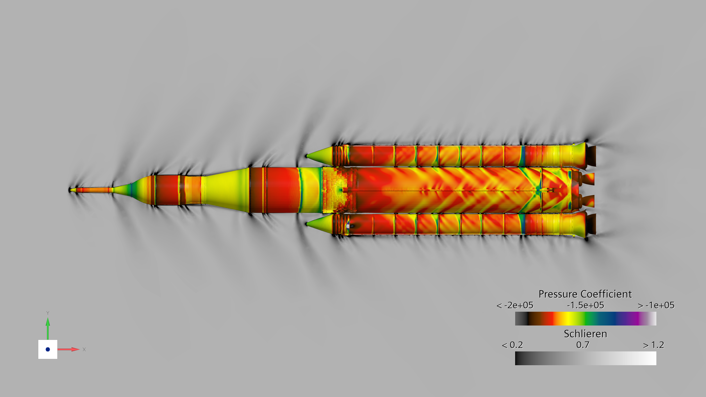
Top-down view — pressure coefficient + Schlieren
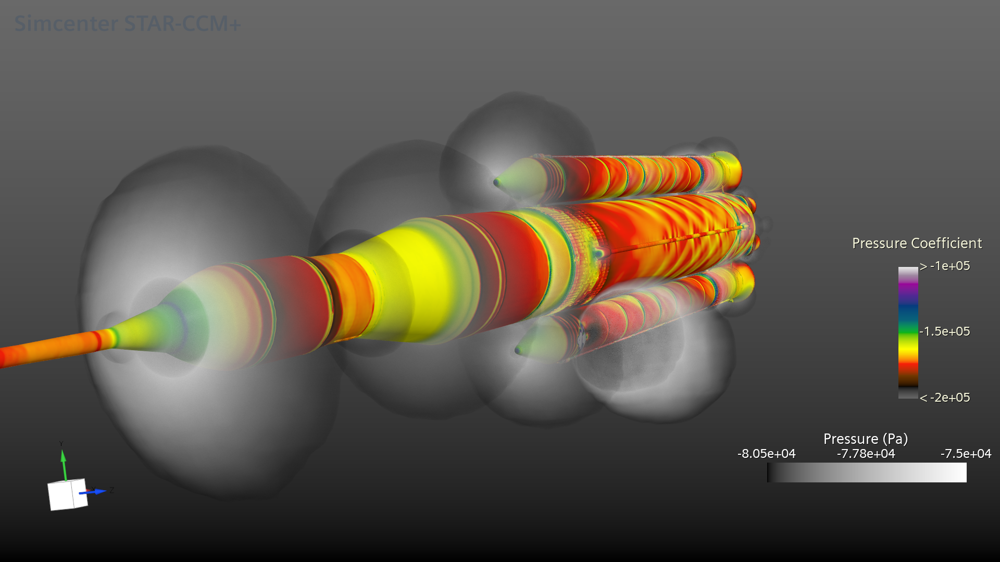
3D view — pressure coefficient + pressure field
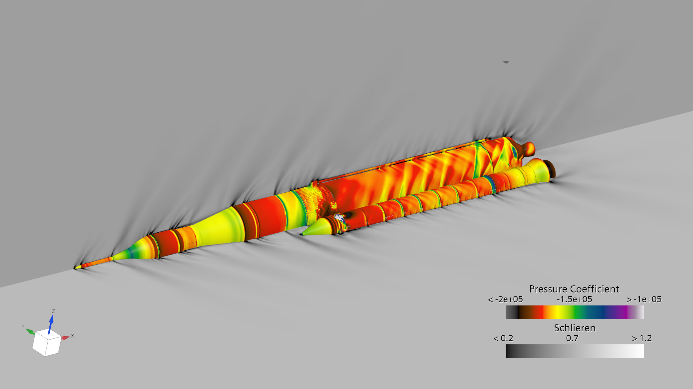
Angled 3D view — pressure coefficient + Schlieren
The capsule
MSL lab at mach 28, using K-ω SST turbulence model and same numerical methods as the SLS rocket.
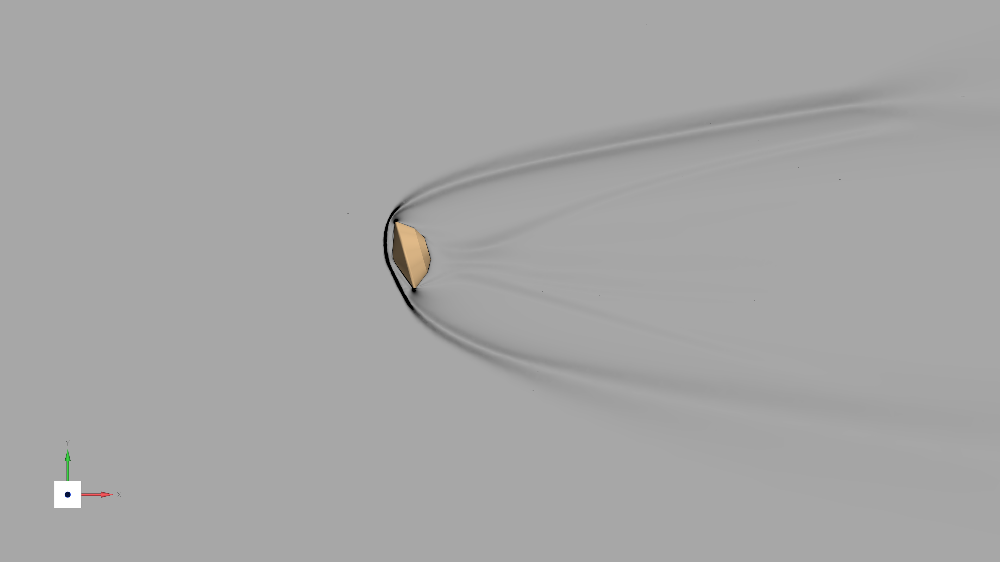
Schlieren
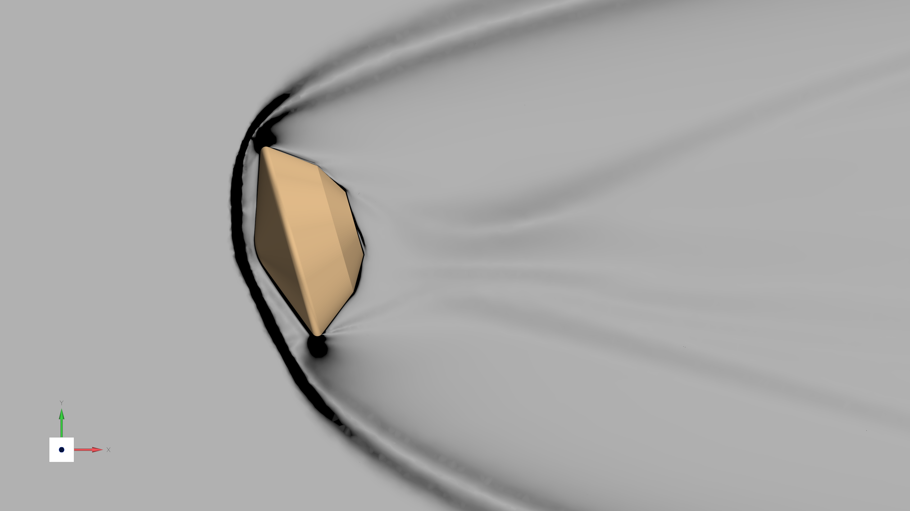
Schlieren — bow shock detail
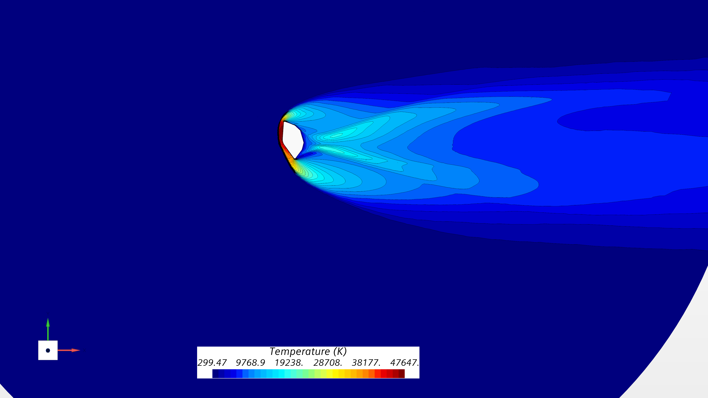
Temperature (K)
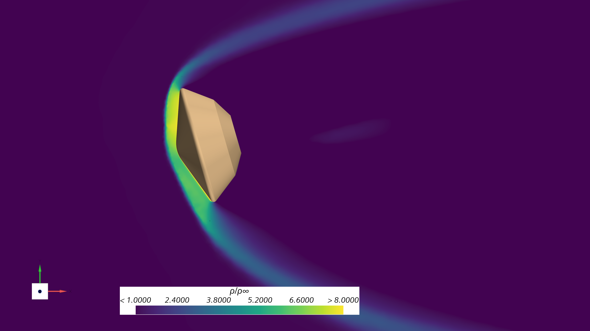
Density ratio ρ/ρ∞
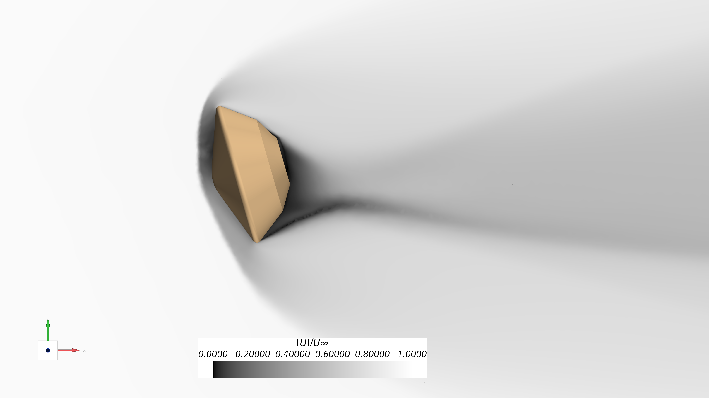
Velocity |U|/U∞
Formula Student
A formula student car tested in various conditions, including an LES study to examine vortex structures, cornering study to test performance in cornering condtions, and straight wind tunnel study. all RANS studies use k-ω SST turbulence model.
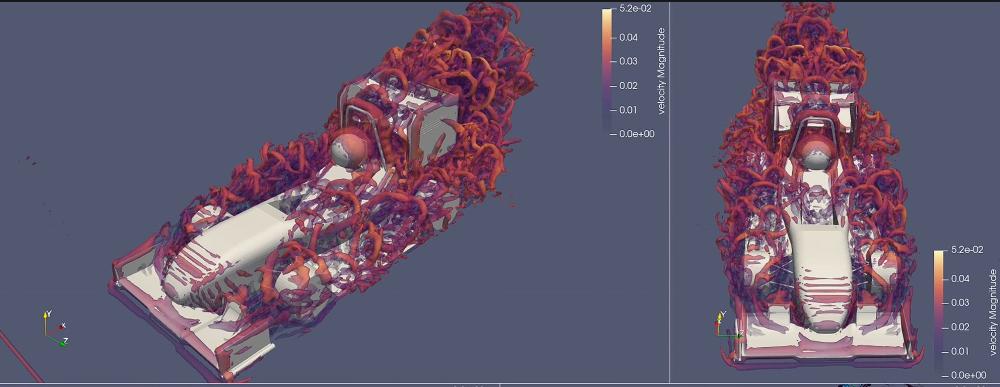
LES (large eddy simulation) of a formula student car - velocity isosurfaces
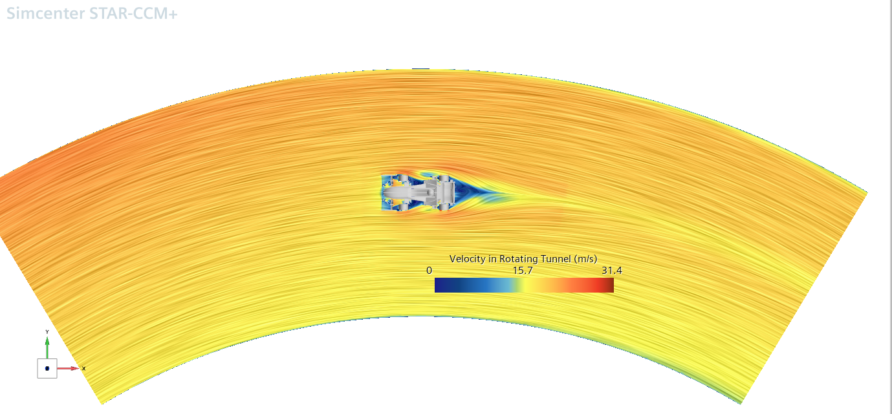
Cornering simulation- rotating tunnel
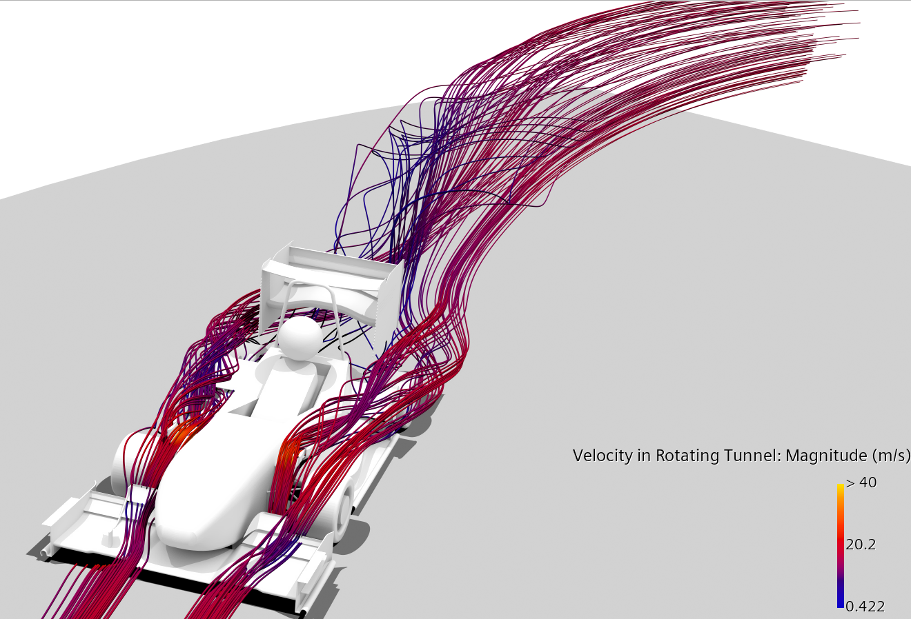
Cornering simulation- rotating tunnel
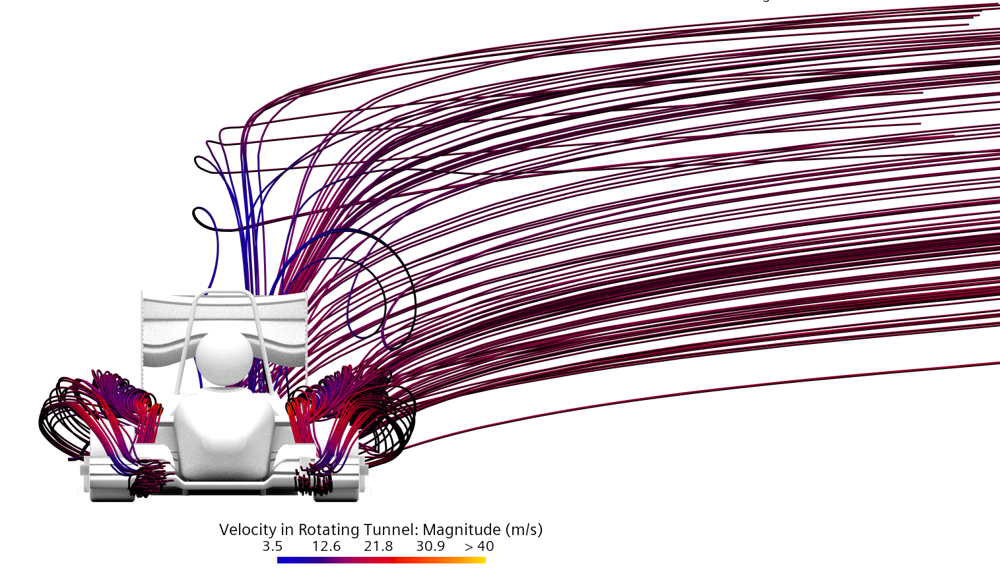
CCornering simulation- rotating tunnel
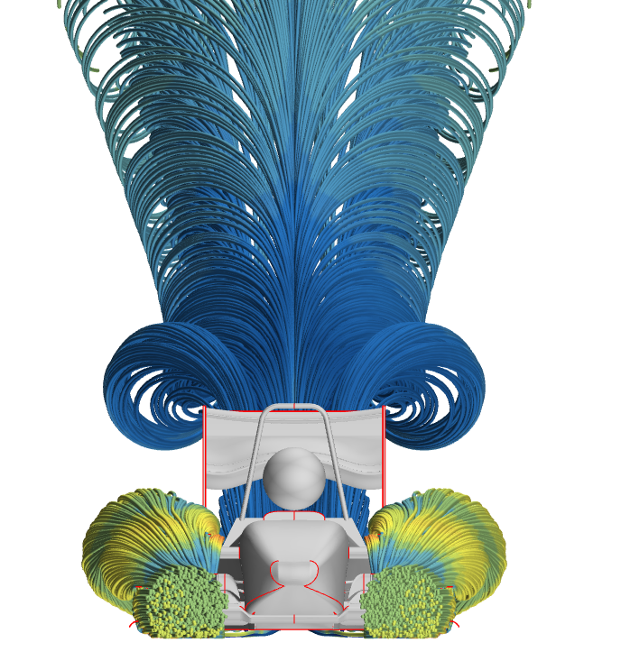
Formula Student - vortex and rea wake structures
Detailed results andanalysis will be published soon once all projects are completed. Stay tuned!